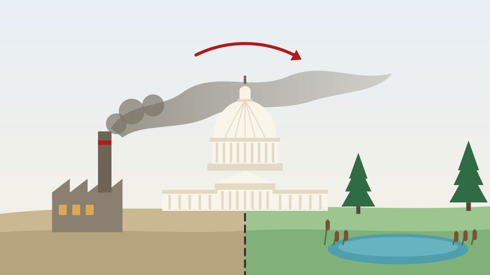

外部性上的美国：从州际贸易条款谈起

环境经济学的理论基础是外部性，而美国政府，其立国基础也是外部性。昨天恰好听哈佛大学肯尼迪学院的学者Charles Taylor报告了一个新的有趣工作，刚好在这里写一点想法。
我曾经和许多中国经济学者聊起过一些美国问题，却发现一个有意思的现象：很少有经济学者注意过美国一条至关重要的法律基础：州际贸易条款（Interstate Commerce Clause）。当提及美国政府时，大多数人只能想起“三权分立”等原则，但事实上，从经济学的角度看，作为美国宪法第1条第8款第3项的“州际贸易条款”，却可能是对美国经济发展影响最为深远的一项。这一项内容非常简单：
“国会有权：管理同外国的、各州之间的和同各印第安部落的贸易。”
然而，这是这不起眼的一项，却恰恰是美国的立国之本之一。绝大多数现代联邦法律和规章制度，如果不在税收权或拨款权的范畴内，几乎都挂靠在这一条款之下。事实上，在美国立国之前，各州的殖民者们甚至不希望有一个新的联合政府骑在各州头上作威作福，但最终联邦政府还是在妥协之下得以建立，并获得了两个至关重要的核心权力。
这两个权力并非大家能自然想到的国防与外交，而是管理州际贸易和税收的权力。而管理州际贸易，恰恰是为了解决各州之间贸易中存在的负外部性问题，而州内事务，“各州可自决之”，即宪法第十修正案所规定的，宪法未授予联邦政府的权力，保留给各州或人民。过去百年里，联邦政府所有的法律与经济政策，几乎都来源于这两大核心权力。美国的立法和释法都以宪法为依托，这一“崇古”特征和第十修正案的限制意味着，当联邦政府和国会想出台新的法律与政策时，几乎都要从宪法中寻找依据。征税并不容易，所以州际贸易条款便成为了“口袋条款”。
因为一切和州际贸易相关的活动联邦政府都有权力管辖，所以这一条款非常容易被联邦政府所利用。例如，当联邦政府想要治理污染，出台《清洁空气法案》和《清洁水法案》时，这一条款便成为最好的理论基础。污染最核心的特征在于外部性，而外部性特征又天然和“州际”相关联，因为这些污染都是跨越州界的。因此，基于这一条款，联邦政府推动污染治理几乎没有任何法理上的障碍，因为宪法赋予了联邦政府管理州际贸易的权力，这一权力很自然的延申到污染治理中：如果纽约州无法证明自己产生的污染不会影响其它州，那么这一条款就允许联邦政府管理纽约州的污染排放。显然，纽约州不可能证明这一点。
美国是所谓的“自由市场”吗？事实上并不是。在美国的宪法下，只要商业活动涉及“跨州”，那么联邦政府就被赋予了介入的权力，而这种权力是一种显而易见的自由新证的权力，商业活动是否跨州往往只在联邦政府一念之间。一个非常著名的案例是1942年的Wickard v. Filburn案。当时，美国政府规定了农民允许种植的小麦产量上限，以此稳定价格。Filburn是俄亥俄州的农民，他种了超出上限的小麦，因此受到了农业部的处罚。Filburn将官司打到法院（Wickard为时任农业部长），他辩称自己的小麦没有在市场上流通，更没有进入跨州贸易，因此联邦政府无权罚款。无懈可击的理由让农民赢得了地区法院的初审，然而当官司打到最高法院时，最高法院却一致裁定，联邦政府有权依据州际贸易条款管控Filburn的自用小麦生产。最高法院给出的两个理由包括：（1）你一个人生产小麦不会影响州际贸易，但如果人人都学你，那州际贸易就会受到影响；（2）你自用小麦还影响了市场的供需，毕竟你不种小麦就得去市场购买，所以还是影响了州际贸易。
在这两个天才般的理由下，农民输了官司。显然，当时美国的一切，都要服务于罗斯福总统的新政能顺利推行，因此拥有释法权力的最高法大法官们为此扩大了对州际贸易条款的解释范围。而联邦政府也惊奇的发现，州际贸易条款居然如此好用。于是，从这时候开始，联邦政府开始了长达数十年的权力扩张，援引州际贸易条款开始不断扩大自己的权力。这一期间类似的案例非常多，其中最有名的案例当属美国的《联邦校园禁枪法案》（Gun-Free School Zones Act，简称GFSZA）。20世纪80-90年代时，联邦政府和国会忧心于校园枪击盛行，希望能在校园禁枪，但美国宪法修正案保障公民拥有持有和携带武器的权利，因此，这一想法和宪法的基础不合。最终，1990年，国会通过了GFSZA，规定在校园附近300m内禁止故意持有已上膛或未妥善保管的枪支。和联邦政府之前的扩权方式类似，其理论基础同样是跨州贸易条款。这个逻辑链条和经济学家的机制检验链条有一些异曲同工之妙：校园枪击→学生无心学习→人力资本积累受阻→企业无法招聘到合格工人→州际贸易受到影响。看！天才般的逻辑下，州际贸易条款为校园禁枪提供了法理依据。
当然，和经济学家们一样荒谬的逻辑，大法官们最终看不下去了。1986年，伦奎斯特接任首席大法官，他是坚定的保守派和宪法第十修正案的捍卫者，在他的带领下，最高法终于开始实质性约束联邦政府滥用州际贸易条款扩张权力。他很快等来了机会：1992年，一名名叫阿方索·洛佩兹（Alfonso Lopez）的高中生在得克萨斯州一所高中携带枪支，违反了该法案，被起诉并判有罪，这就是著名的United States v. Lopez案，这个官司打到最高法院。最终，1995年，美国最高法院以5比4的裁决判决联邦校园禁枪法案违宪，认为持枪行为未对州际贸易产生实质影响。这标志着最高法院对联邦政府基于州际贸易条款行使权力的一个重大限制，且是自1930年代以来第一次裁定国会的州际贸易条款权力过度扩张。
而另一个经典的案例则是关于奥巴马医改的法律争端。2010年，奥巴马签署了《平价医疗法案》（ACA），这也是奥巴马毕生最大的政绩。然而，这一医改法案中有一则强制购保条款，要求所有美国公民和合法居民必须购买医疗保险，否则将面临罚款。这一措施的目的在于扩大保险基数，分散风险，使得保险更加可负担。显然，联邦政府也很自然的想到了利用州际贸易条款来作为法理依据。联邦政府指出，如果不强制个人购买保险，那么由于搭便车等行为，医保保险市场将会崩溃，从而对州际贸易产生影响。当时许多机构和个人起诉了联邦政府，最高法合并了这些案件，统一为“NFIB v. Sebelius案”（Sebelius为时任美国卫生部长）。2012年，美国最高法院以5比4的投票结果作出裁决，维持了个人强制购买保险条款的合宪性，但不是基于“州际商业条款”，而是基于联邦政府的另一种关键权力——税收权力。首席大法官约翰·罗伯茨（John Roberts）在判决中指出，虽然联邦政府不能通过“州际商业条款”强制公民购买保险，但罚款实际上是一种税，因此是宪法赋予国会的合法权力。罗伯茨大法官通过一个天才般的想法，在维系了奥巴马政府医改成果的同时，约束了联邦政府的权力扩张。从40年代到90年代，联邦政府用五十年时间进行了扩权，而90年之后，最高法在伦奎斯特和罗伯茨师徒接力下，用接近30年的时间，又收紧了对联邦政府权力扩张的约束。
那么，联邦政府借助跨州贸易条款进行的权力扩张是好是坏？这个问题很难作为价值判断。如果只看前面的内容，或许会认为联邦政府是个大坏蛋大魔王，而最高法院的大法官是捍卫正义的天使，但许多时候却并非如此二元对立的简单。Charles Taylor最近的一系列工作，恰好是个很有趣的例子。这个例子中，关键角色是美国的湿地，他的一系列研究分析了州际贸易条款约束下EPA的执法能力及其对环境的影响。
众所周知，在美国，联邦环保署（EPA）负责环境事务，大约相当于中国生态环境部的角色。因此，EPA肩负着环境治理的重要角色，尤其是大气污染治理和水污染治理这两项关键任务，法理来源分别为清洁空气法案（CAA）与清洁水法案(CWA)，我想经济学学者都不会陌生。CWA中有一项关键条款，即著名的Section 404，这一条款规定：限制向受联邦管辖水域排放“挖掘或填埋材料”；任何填埋湿地、河道或水体的开发活动通常需要获得美国陆军工程兵团的许可。但问题来了，到底什么才是所谓的“受联邦管辖水域”（WOTUS）？
由于这些法理原则都基于州际贸易条款，一个自然而然的推论是，影响州际贸易的水域都是WOTUS。那什么水域会影响州际贸易呢？能跨州通航、用于商业运输的可通航河流自然是WOTUS，但其它湿地呢？联邦政府的主张是，即使一些湿地与可通航河流没有直接连接，只要它们通过沟渠、排水系统或地下水与水系存在生态联系，也应受到联邦监管。很快这一问题迎来了法律争议：20世纪90年代Rapanos在密歇根州土地上填埋湿地用于商业开发，但没有获得美国陆军工程兵团的许可，联邦政府随后对其提起刑事和民事诉讼，多年审理后上诉至美国最高法院。最高法院需要决定联邦政府是否有权监管这些距离可通航河流较远、但可能通过水系连接的湿地。2006年，美国最高法院作出了一个复杂且分裂的裁决，法院未形成单一多数意见，而是出现了4：1：4的多个意见：复数意见由安东宁·斯卡利亚（Antonin Scalia）大法官撰写，认为只有“相对永久性”的水体以及与这些水体具有连续表面连接的湿地才属于《清洁水法案》的管辖范围。而安东尼·肯尼迪（Anthony Kennedy）大法官提出“重大联系”标准，认为只要某一湿地对可通航水域的化学、物理或生物完整性产生重要影响，就应受到监管。安东尼·肯尼迪大法官的“重大联系”标准在之后的司法实践中被广泛采用，用来判断某一湿地是否属于联邦管辖范围。
这一标准在2023年的Sackett诉EPA案出现了变化。Sackett夫妇在爱达荷州的一块私人土地上进行建设，随后受到美国环境保护署（EPA）的制裁，指控他们违反了《清洁水法案》中的湿地保护规定。EPA认为萨克特夫妇的土地属于受《清洁水法案》保护的水域，因此需要特别的许可才能进行开发。而萨克特夫妇则认为，EPA没有权力管辖他们的私人土地，且政府的行为是对他们财产权的侵犯。该案件最终上诉至最高法院，主要问题围绕着《清洁水法案》的"美国水域"定义。最终，最高法院达成了5：4的裁决：由塞缪尔·阿利托大法官撰写的多数意见认为，Rapanos案的多数意见是正确的，并且在《清洁水法》的适用范围内，“水”一词仅指“那些相对永久性的、静止的或持续流动的水体，这些水体构成地理特征，在日常用语中通常被称为‘溪流、海洋、河流和湖泊’”法院认为，除非水体与影响州际贸易的关键湖泊和河流有“连续的地表连通”，否则它们不受《清洁水法》的保护。这意味着，与这些湖泊/河流有地下连通的水体，甚至被人工屏障与湖泊/河流隔开的水体，都不再受《清洁水法》的保护。
外部性打败外部性，美国反对美国。
本文部分内容想法参考自文章：《美国最高法院这十年：把放出去的权力再收回来》。特此致谢。
本文原载于微信公众号「山河随想录」，2026-03-13。
← 返回 Academic Blog